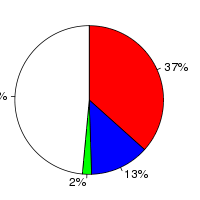
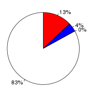

Oryza sativa Japonica (Oryza sativa, IRGSP-1.0) and Aegilops tauschii (Aegilops tauschii, GCA_000347335.1) were aligned using the LastZ alignment algorithm (LastZ) in Ensembl release 76. Oryza sativa Japonica was used as the reference species. After running LastZ, the raw LastZ alignment blocks are chained according to their location in both genomes. During the final netting process, the best sub-chain is chosen in each region on the reference species.
Full list of pairwise alignments| Gap open penalty (O) | 400 |
| Gap extend penalty (E) | 30 |
| HSP threshold (K) | 3000 |
| Threshold for gapped extension (L) | |
| Threshold for alignments between gapped alignment blocks (H) | |
| Masking count (M) | |
| Seed and Transition value (T) | 1 |
| Additional parameters | |
| Scoring matrix (Q) | Default |
Number of alignment blocks: 82921
| Genome coverage(bp) | Coding exon coverage (bp) | |
|---|---|---|
| Oryza sativa Japonica |
|
 |
| Covered: 36,285,359 out of 374,424,240 | Matches: 12,457,410 out of 34,124,807 | |
| Uncovered: 338,138,881 out of 374,424,240 | Mis-matches: 4,381,956 out of 34,124,807 | |
| Insertions: 560,806 out of 34,124,807 | ||
| Uncovered: 16,724,635 out of 34,124,807 | ||
| Aegilops tauschii |
|
 |
| Covered: 19,118,328 out of 3,313,764,331 | Matches: 5,393,942 out of 40,791,602 | |
| Uncovered: 3,294,646,003 out of 3,313,764,331 | Mis-matches: 1,497,228 out of 40,791,602 | |
| Insertions: 167,153 out of 40,791,602 | ||
| Uncovered: 33,733,279 out of 40,791,602 |